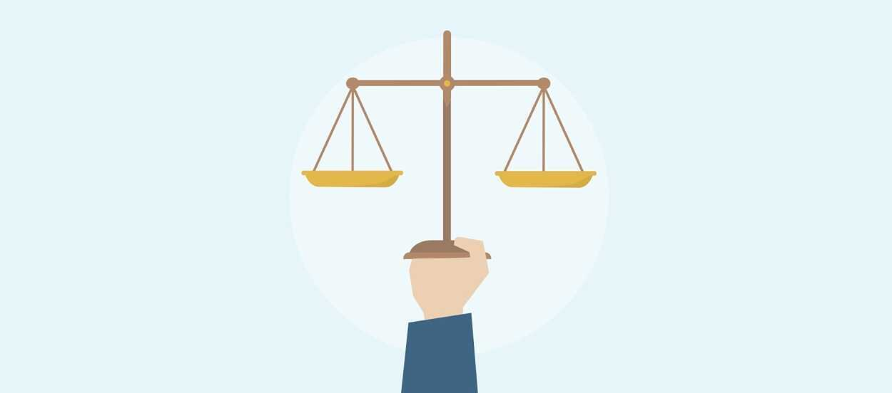
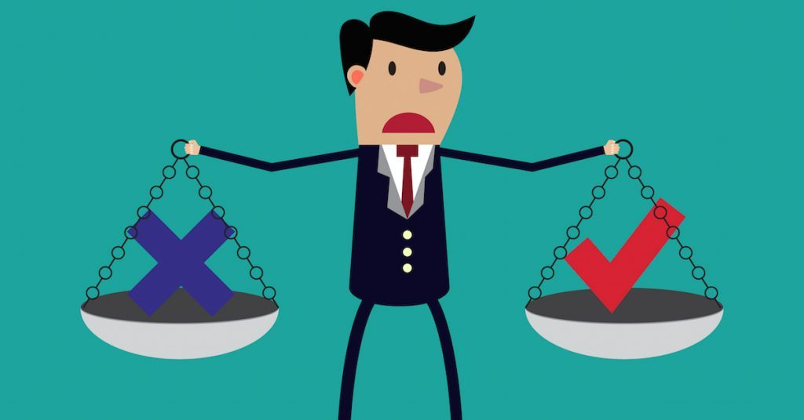

Ahora bien... Vamos a definir algunos conceptos elementales que deberemos manejar a lo largo de esta asignatura.
Ética

La ética, también conocida como filosofía moral, es una rama de la filosofía que implica sistematizar, defender y recomendar conceptos de conducta correcta. Busca resolver cuestiones de moralidad humana definiendo conceptos como el bien y el mal, la virtud y el vicio, la justicia y el crimen
La capacidad que tiene un individuo para decidir si algo está moralmente correcto o no, recibe por nombre criterio ético. Existen diferentes tipos de criterios que pueden ser utilizados en la toma de una decisión, entre ellos se encuentran el criterio utilitario, centrarse en la justicia y centrarse en los derechos.
Cada individuo está en la capacidad de forjarse una imagen de lo que es y desea ser en una sociedad, la cual está cada vez más sumergida en situaciones de riesgo en cuanto a la identidad individual de las personas. A partir de ese momento la familia juega un papel de suma importancia, ya que, infunde valores éticos y morales.
Adicional a esto, la ética guía al individuo en la evaluación de sus acciones, permitiéndole una mejor comprensión de las personas que le rodea, logrando que el sujeto tenga su propio criterio.
El término ética proviene de la palabra griega ethos, que originariamente significaba «morada», «lugar donde se vive» y que terminó por señalar el «carácter» o el «modo de ser» peculiar y adquirido de alguien; la costumbre (mos-moris: la moral).
Yirda, A. (2021, September 13). ¿Qué es la Ética? » Su Definición y Significado 2021. Conceptodefinicion. https://conceptodefinicion.de/etica/Deontología

Deontología es un concepto que se utiliza para nombrar a una clase de tratado o disciplina que se centra en el análisis de los deberes y de los valores regidos por la moral.
Se dice que el filósofo británico Jeremy Bentham fue el responsable de acuñar la noción. La deontología forma parte de lo que se conoce como ética normativa (la filosofía que indica qué debería considerarse como bueno y qué es lo que debería calificarse como malo). Esto quiere decir que cada profesión, oficio o ámbito determinado puede tener su propia deontología que indica cuál es el deber de cada persona.
Porto, J., Gardey, . & Merino, M. (2021, March 2). Definición de deontología - Qué es, Significado y Concepto. Definicion. https://definicion.de/deontologia/La Deontologia como teoría de etica normativa
La deontología también es la teoría en ética normativa según la cual existen ciertas acciones que se deben realizar, y otras que no se deben realizar, más allá de las consecuencias positivas o negativas que puedan traer. Es decir, hay ciertos deberes que se deben cumplir más allá de sus consecuencias. Para la deontología, las acciones tienen un valor en sí mismas, independientemente de la cantidad de bien que puedan producir. De acuerdo con la convicción de que hay acciones buenas o malas en sí mismas, se sigue el deber de realizarlas o de evitarlas. Una acción puede ser moralmente correcta, aunque no produzca la mayor cantidad de bien, porque es justa por sí misma. Sin embargo, las éticas deontológicas se vuelven cada vez más sensibles a la necesidad de considerar las consecuencias globales de las acciones. Si, por ejemplo, mediante una mentira se puede salvar una vida humana, un ético deontológico puede reconocer una ponderación de los resultados de la acción. No obstante, en estos casos, se tienen en cuenta las consecuencias de la acción y no el valor propio de la acción, por lo que queda suspendida la deontología.
Wikipedia, C. (2022, April 2). Deontología (ética) - Wikipedia, la enciclopedia libre. Es. https://es.wikipedia.org/wiki/Deontolog%C3%ADa_(%C3%A9tica)Código de Ética
El código de ética es un documento compuesto por una serie de normas, reglamentos y valores que han sido establecidos para regular los comportamientos y actitudes de las personas que forman parte de un mismo contexto, bien sea con respecto a una profesión, organización o empresa.
El código de ética se apoya en la deontología, una rama de la ética desde la cual se estudian los deberes que rigen una actividad profesional.
Es importante recordar que la ética se refiere al carácter, y que es una rama de la filosofía que estudia la moral y los comportamientos de las personas, cuyo objetivo es determinar aquellas actitudes que son consideradas como buenas o malas en la sociedad.
Por su parte, los códigos son un conjunto de normas y leyes, de tipo obligatorio y vinculado al derecho, implementados para regular diversas actitudes humanas.
Morales, A. (2019, May 27). Código de ética: qué es, características y beneficios - Toda Materia. Todamateria. https://www.todamateria.com/codigo-de-etica/Colegio de Profesionales
Un colegio profesional es una asociación de carácter profesional, compuesta por unos integrantes que ejercen una misma profesión, siendo estos, habitualmente, pertenecientes a profesiones regladas o reconocidas por las normas que aplica el Estado.
Así, un colegio profesional es una asociación que tiene un carácter profesional. Esta asociación se compone de integrantes que suelen desempeñar una misma profesión, adquiriendo la calidad de colegiado.
Esta unificación gremial, se suele dar en profesiones reguladas o reguladas. Es decir, aquellas en las que se exigen una serie de criterios para acceder a ellas. Es por esto que las profesiones que recogen los colegios profesionales suelen estar reconocidas, respaldadas, por el propio Estado, así como por la normativa estatal.
Existen normativas para determinadas profesiones que exigen el respaldo colegial para el desempeño de las funciones. Es el caso de los abogados o los médicos, los cuales deben estar colegiados para el desempeño de su profesión dentro de la legalidad vigente.
Objetivos y características
Entre los objetivos que posee un colegio profesional se encuentran todos aquellos que tengan relación con la profesión que dicen representar. En este sentido, su objetivo esencial es primar los intereses de un colectivo frente a cualquier situación que pueda dañar la profesión.
Sin embargo, con el desarrollo de los colegios profesionales a lo largo de la historia, se han ido adquiriendo nuevas funciones y objetivos que cabe destacar.
Entre los objetivos de un colegio profesional se encuentran:
- Defensa de los intereses de la profesión.
- Acciones de formación y reciclaje para la adaptación y la actualización de los profesionales en activo.
- La elaboración de un código deontológico que ampare el ejercicio profesional.
- Conectan a profesionales que desempeñan un mismo oficio, generando una defensa y una promoción colectiva.
- Generan acciones, así como poseen espacios, en los que se generan intercambios de opiniones, así como contactos, con personas que desempeñan la misma profesión.
- Ofrecen servicios para todos los colegiados en temas como el empleo, publicaciones de interés, seguros de responsabilidad civil, así como todo aquello que pueda ser de utilidad para el colegiado.
- Emiten propuestas y promueven una legislación que favorezca al colectivo profesional, en contraposición de normativas que puedan afectar a los intereses del gremio.
- Velar por una práctica profesional ética y responsable.
- Representación de los colegiados, así como la defensa de sus derechos.
Entre otros, la relación que presentamos recoge las principales funciones y los objetivos que persigue un colegio profesional.
Morales, F. (2022, April 13). Colegio profesional - Qué es, definición y concepto | 2022 | Economipedia. Economipedia. https://economipedia.com/definiciones/colegio-profesional.html